© Bundiyarra Aboriginal Community Aboriginal Corporation
Wajarri is the language spoken by the people who originally lived along the upper reaches of the Murchison river, from around Yallalong Station in the west, to near Meekatharra in the east, from north of Mt Augustus, to south of Talarang Peak, Western Australia.

This app is designed as a reference tool. While some cultural and other information has been included with the entries, not all information that is contained in the dictionary will be found in it. Some sensitive material has also been removed.
Each entry has an English translation. Further information about the word or phrase is listed under Description.
Some dialect information is available; you will see are Nhugarn, Byro, Birdungu, Ngunuru, Nharnu and Mileura, each referring to a different part of Wajarri country. For further information on Wajarri dialects, consult the Wajarri dictionary.
The Wajarri Dictionary Hard Copy is available for purchase from our website www.bundiyarra.org.au
 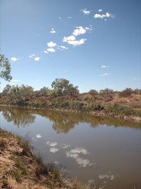
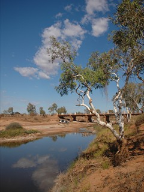
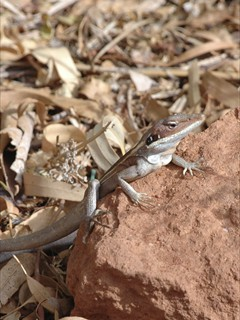
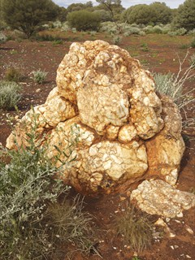
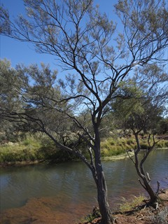
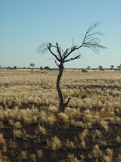
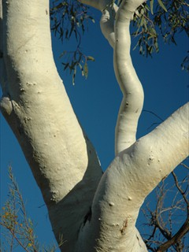
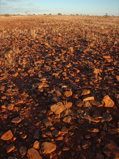
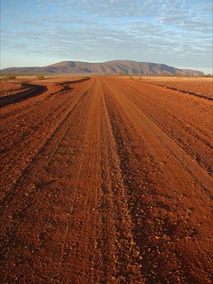
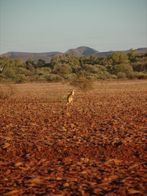
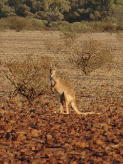
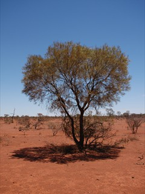
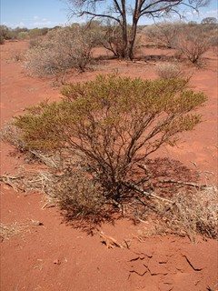
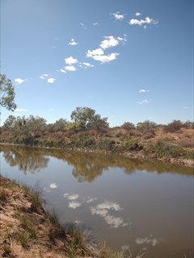
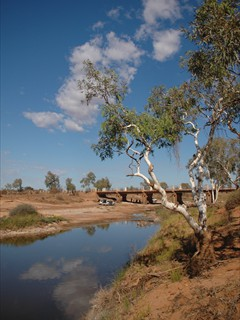
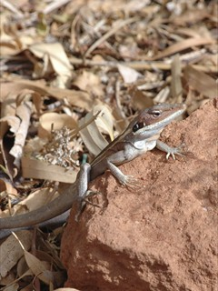
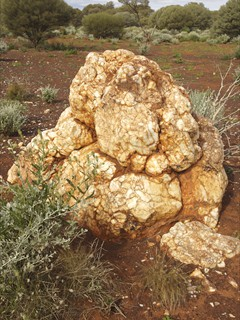
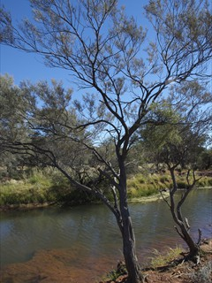
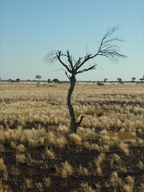
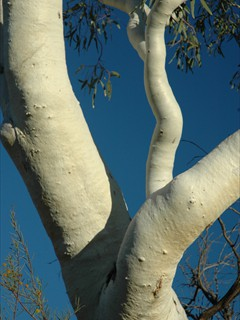
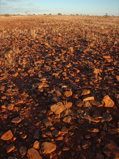
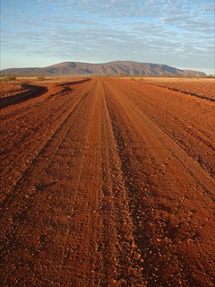
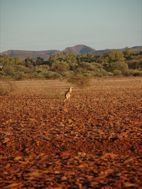
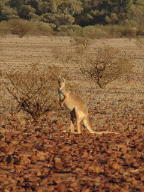
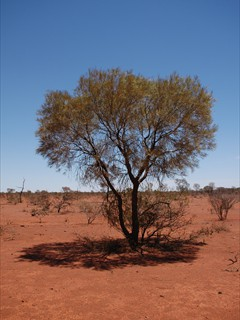
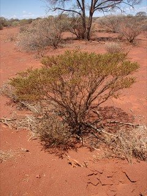
To Yamaljinggu, and to the memories of Alya and Ijida, unwavering long-serving contributors to this record, and to all Wajarri speakers named in the Wajarri Dictionary, and other contributors whose names may not be there who purposely left this legacy for their children and grandchildren.
With deepest respect and gratitude to those people, the Wajarri who shared their words hence their world, thank you.